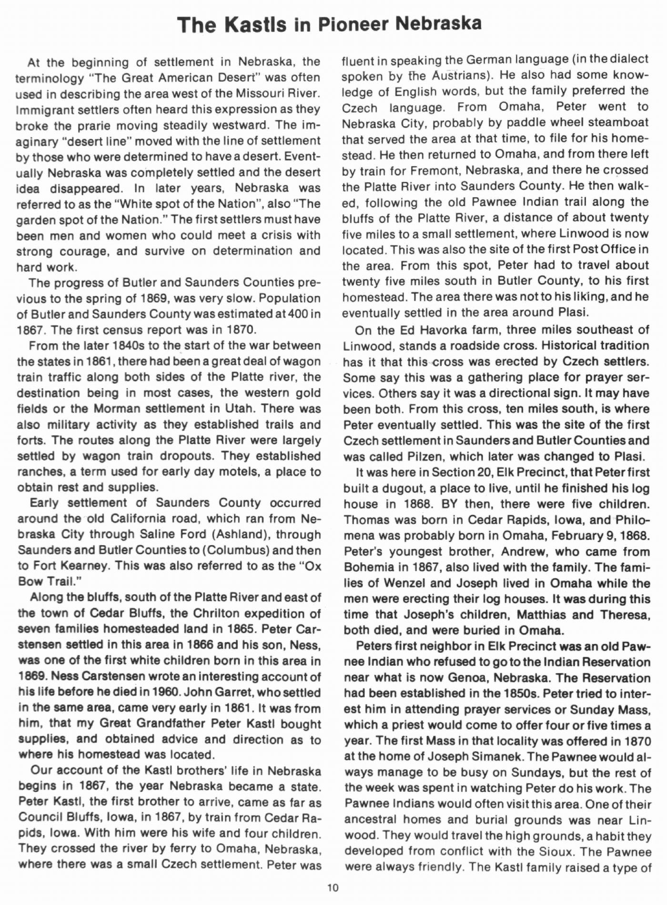

The book · The Kastls: in Pioneer Nebraska
Page 10 The Kastls in Pioneer Nebraska


Transcription
The Kastls in Pioneer Nebraska
At the beginning of settlement in Nebraska, the terminology "The Great American Desert" was often used in describing the area west of the Missouri River. Immigrant settlers often heard this expression as they broke the prarie moving steadily westward. The imaginary "desert line" moved with the line of settlement by those who were determined to have a desert. Eventually Nebraska was completely settled and the desert idea disappeared. In later years, Nebraska was referred to as the "White spot of the Nation", also "The garden spot of the Nation." The first settlers must have been men and women who could meet a crisis with strong courage, and survive on determination and hard work.
The progress of Butler and Saunders Counties previous to the spring of 1869, was very slow. Population of Butler and Saunders County was estimated at 400 in 1867. The first census report was in 1870.
From the later 1840s to the start of the war between the states in 1861, there had been a great deal of wagon train traffic along both sides of the Platte river, the destination being in most cases, the western gold fields or the Morman settlement in Utah. There was also military activity as they established trails and forts. The routes along the Platte River were largely settled by wagon train dropouts. They established ranches, a term used for early day motels, a place to obtain rest and supplies.
Early settlement of Saunders County occurred around the old California road, which ran from Nebraska City through Saline Ford (Ashland), through Saunders and Butler Counties to (Columbus) and then to Fort Kearney. This was also referred to as the "Ox Bow Trail."
Along the bluffs, south of the Platte River and east of the town of Cedar Bluffs, the Chrilton expedition of seven families homesteaded land in 1865. Peter Carstensen settled in this area in 1866 and his son, Ness, was one of the first white children born in this area in 1869. Ness Carstensen wrote an interesting account of his life before he died in 1960. John Garret, who settled in the same area, came very early in 1861. It was from him, that my Great Grandfather Peter Kastl bought supplies, and obtained advice and direction as to where his homestead was located.
Our account of the Kastl brothers' life in Nebraska begins in 1867, the year Nebraska became a state. Peter Kastl, the first brother to arrive, came as far as Council Bluffs, Iowa, in 1867, by train from Cedar Rapids, Iowa. With him were his wife and four children. They crossed the river by ferry to Omaha, Nebraska, where there was a small Czech settlement. Peter was fluent in speaking the German language (in the dialect spoken by the Austrians). He also had some knowledge of English words, but the family preferred the Czech language. From Omaha, Peter went to Nebraska City, probably by paddle wheel steamboat that served the area at that time, to file for his homestead. He then returned to Omaha, and from there left by train for Fremont, Nebraska, and there he crossed the Platte River into Saunders County. He then walked, following the old Pawnee Indian trail along the bluffs of the Platte River, a distance of about twenty five miles to a small settlement, where Linwood is now located. This was also the site of the first Post Office in the area. From this spot, Peter had to travel about twenty five miles south in Butler County, to his first homestead. The area there was not to his liking, and he eventually settled in the area around Plasi.
On the Ed Havorka farm, three miles southeast of Linwood, stands a roadside cross. Historical tradition has it that this cross was erected by Czech settlers. Some say this was a gathering place for prayer services. Others say it was a directional sign. It may have been both. From this cross, ten miles south, is where Peter eventually settled. This was the site of the first Czech settlement in Saunders and Butler Counties and was called Pilzen, which later was changed to Plasi.
It was here in Section 20, Elk Precinct, that Peter first built a dugout, a place to live, until he finished his log house in 1868. BY then, there were five children. Thomas was born in Cedar Rapids, Iowa, and Philomena was probably born in Omaha, February 9, 1868. Peter's youngest brother, Andrew, who came from Bohemia in 1867, also lived with the family. The families of Wenzel and Joseph lived in Omaha while the men were erecting their log houses. It was during this time that Joseph's children, Matthias and Theresa, both died, and were buried in Omaha.
Peters first neighbor in Elk Precinct was an old Pawnee Indian who refused to go to the Indian Reservation near what is now Genoa, Nebraska. The Reservation had been established in the 1850s. Peter tried to interest him in attending prayer services or Sunday Mass, which a priest would come to offer four or five times a year. The first Mass in that locality was offered in 1870 at the home of Joseph Simanek. The Pawnee would always manage to be busy on Sundays, but the rest of the week was spent in watching Peter do his work. The Pawnee Indians would often visit this area. One of their ancestral homes and burial grounds was near Linwood. They would travel the high grounds, a habit they developed from conflict with the Sioux. The Pawnee were always friendly. The Kastl family raised a type of
People from the line of descent on this page
- Mathias Kastl 1864/1865–1868/1869
- Theresia Kastl 1866/1867–1868/1869
Transcriber’s notes
Start of chapter 'The Kastls in Pioneer Nebraska'. Last sentence ('The Kastl family raised a type of') runs on to the next page. Print spellings kept: 'prarie', 'Morman', 'BY then', 'Peters first neighbor', 'Chrilton'.